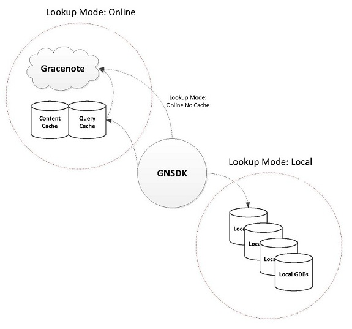

The GNSDK for Desktop SQLite module provides a local storage solution using the SQLite database engine. This module is used to manage a local cache of content and Gracenote Service queries. This is for GNSDK use only - your application cannot use this database for its own storage.
For information on using SQLite, see http://www.sqlite.org
In the future, other database modules will be made available, but currently, the only option is SQLite. Besides APIs specific to SQLite, there is a set of general storage APIs that apply, now and in the future, to whatever database module is implemented. These general APIs cover setting cache location and various cache maintenance operations (cleanup, validate, compact, flush, and so on). See the API Reference for a complete list.

Specifically, API calls are provided to manage 3 stores or caches (as indicated by the following defines):
To begin, your application needs to make the following call to initialize SQLite (after initializing GNSDK Manager and getting an SDK handle).
gnsdk_storage_sqlite_initialize(sdkmgr_handle);
Important: It is possible to initialize this library at any time before or after other libraries have been operating. However, to ensure that all queries are properly cached, it should be initialized immediately after the GNSDK Manager and before any other libraries.
As with all GNSDK "initialize" calls, there should be a corresponding "shutdown" call before your application exits:
gnsdk_storage_sqlite_shutdown();
Following initialization, your code must make the following API call to establish a valid storage folder path for these caches. The path must be writeable. The following sample call sets this folder to the current directory ('.').
gnsdk_storage_sqlite_option_set(GNSDK_STORAGE_SQLITE_OPTION_STORAGE_FOLDER, ".");
Folder paths can be either relative or absolute. The SDK is path convention agnostic in that, given either direction for slashes (e.g., "\" or "/"), it will correct to the native OS's standard.
In addition to setting the location for all 3 caches, your application has the option to set a location for each cache with the gnsdk_manager_storage_location_set() API. Note that this is a general storage API call and not specific to SQLite.
gnsdk_manager_storage_location_set(GNSDK_MANAGER_STORAGE_QUERYCACHE, "./querycache");
You might want to set your cache stores to different locations to improve performance and/or tailor your application to specific hardware. For example you might want your locale list store in flash memory and your image store on disk.
Important: Neither gnsdk_storage_sqlite_option_set() nor gnsdk_manager_storage_location_set() returns an error if the passed location does not exist or is not writeable. In this case, no caching is done. Your application can create this folder at a later time to turn on caching.
Other SQLite API calls cover setting cache file and memory size, journaling, and synchronous operations. See the API Reference for a complete list.